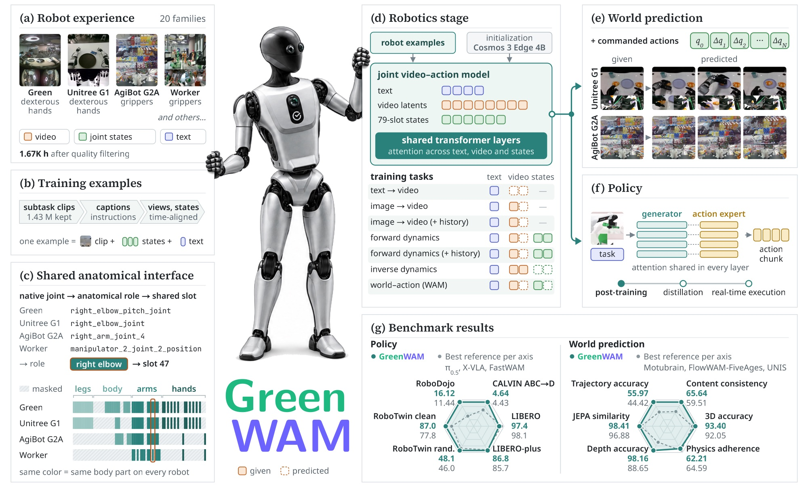
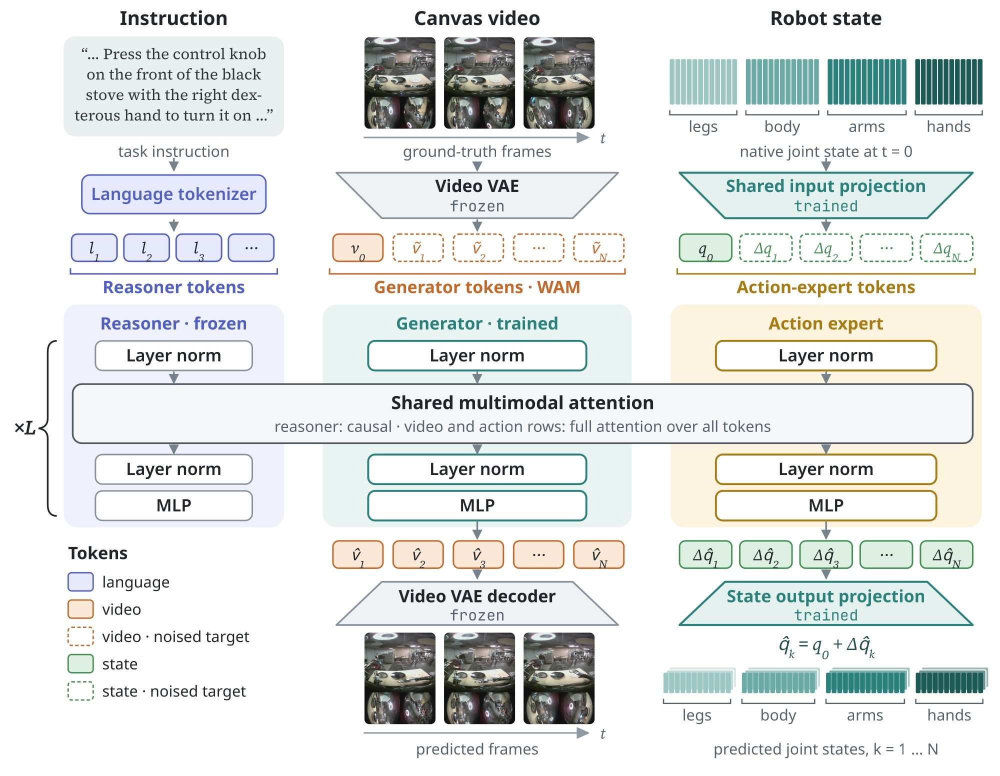
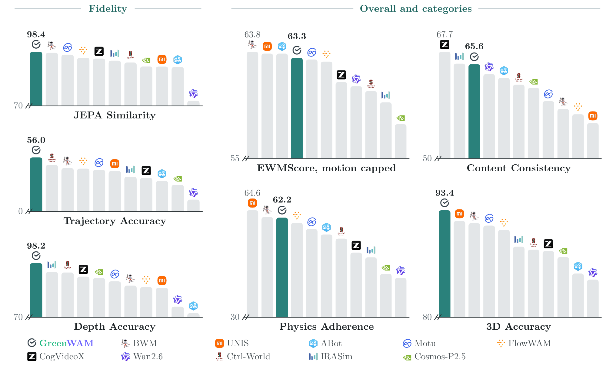
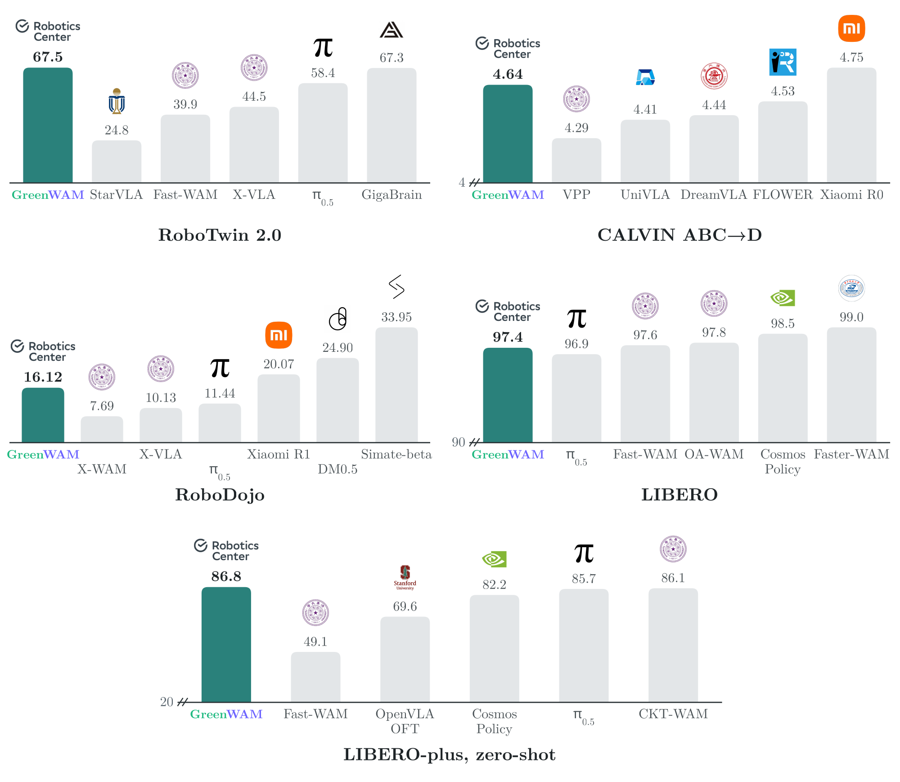
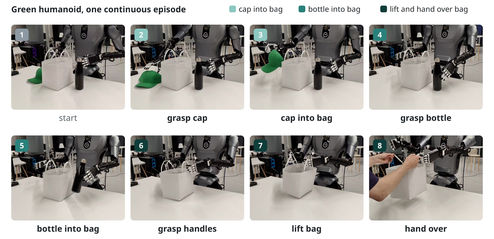
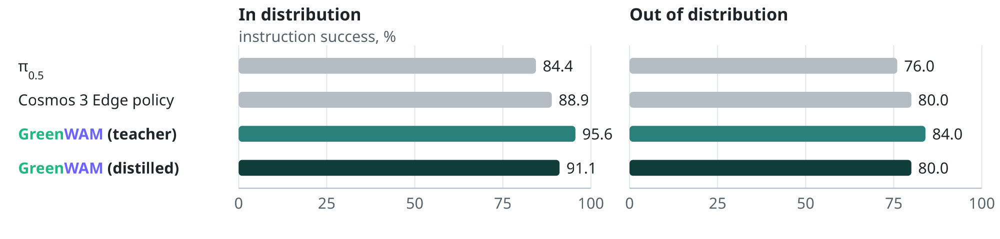
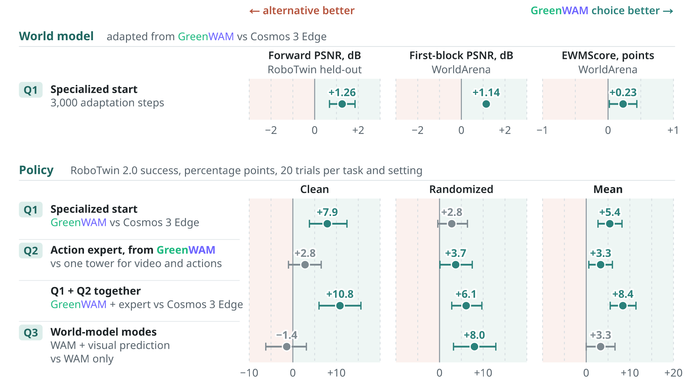
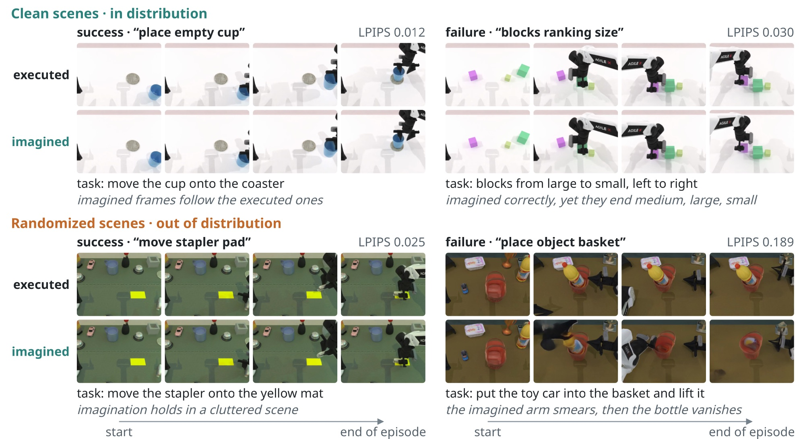
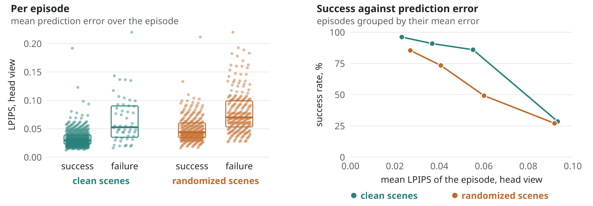

Technical report · Sber Robotics Center · 2026
GreenWAM
A World Foundation Model for Robotics
Gennady Sidorov, Valerii Kornilov, Denis Grankin, Polina Fedotova, Aleksey Postnikov
Brain Team, Sber Robotics Center

- Question
- Can one robot world model serve both as a world model and as a policy across different bodies, and what makes this work?
- Recipe
- GreenWAM, built on Cosmos 3 Edge: (1) a shared anatomical action space that describes 20 robot families in common joint coordinates; (2) joint training on these families in visual, action-conditioned and world–action modes; (3) policies that split an action expert off the generator.
- Results
- As a world model: top-tier trajectory, depth and 3D accuracy on WorldArena 1.0, ahead of every world–action model and video generator in our comparison.
- As a policy: among the top entries of the RoboTwin 2.0 leaderboard, the highest zero-shot LIBERO-plus success among the compared methods, competitive on CALVIN and LIBERO.
- On a real humanoid: more successful than policies adapted from π0.5 and from Cosmos 3 Edge; distilled into a single-step policy for real-time control.
- Three findings: robot specialization improves prediction and control together; an action expert helps when split off at the start; world-model modes during adaptation preserve robustness.
Recipe
One generator for video and robot motion, shared across bodies.
GreenWAM maps the states of different robots into shared anatomical coordinates and trains one generator to predict video, robot motion or both; a policy is obtained by splitting an action expert off this generator. It starts from Cosmos 3 Edge 4B, whose mixture-of-transformers backbone couples a reasoner and a generator. Training data: 20 two-armed robot families, 1,688.5 hours, 74 % real; the robotics stage trains for 36,500 optimizer steps.

Shared anatomical action space
Robot datasets disagree on joint layout, order, units, sign and zero. Layout-specific codecs map native channels to 79 anatomical coordinates that pass through one shared input and output projector: a left-elbow coordinate occupies the same slot on every platform, and no robot has action parameters of its own.
Explore: the slots each family fills · hours in the corpus
Joint video–action modeling
A robot clip can answer several questions: what the scene will look like, what the robot will see if it follows a trajectory, which trajectory produced a video, and what to do next. One set of generator weights trains on seven modes; a mode fixes which streams are clean conditions and which are noised targets.
As a world model
It predicts what the cameras will see when the robot moves.
Adapted to WorldArena 1.0, a public benchmark of action-conditioned video prediction, GreenWAM has the highest trajectory, depth and 3D accuracy among the compared world–action models and video generators.

Only the first frame comes from the recording; the rest of the episode is predicted from the robot's actions.
As a policy
The same generator becomes a policy by splitting off an action expert.
For policy adaptation, action tokens move to a dedicated transformer while video tokens stay in the generator; joint attention connects the two streams at every layer. The policy predicts future video together with the state trajectory, executes a prefix and replans.
The video the policy predicts with each action chunk
Simulation benchmarks
- RoboTwin 2.0. 86.98 % clean and 48.10 % randomized success, 67.54 % on average, over 50 tasks with 100 trials per task: among the top entries of the leaderboard.
- LIBERO and LIBERO-plus. With one policy, close to the dedicated policies on LIBERO and the highest zero-shot LIBERO-plus success in the comparison, although the single-arm Franka is absent from the corpus.
- CALVIN. 4.64 instructions per chain on average, above FLOWER (4.53).
- RoboDojo. Trained on the official training set and compared with the official leaderboard: a score of 16.12 and a success rate of 10.49 %, higher on both aggregates than π0.5, X-VLA and X-WAM.

RoboTwin 2.0 rollouts
Successful episodes of the reported policy; under each task, its success rate over 100 trials. 3× speed.
Real-time control on a real humanoid
Evaluated on the Green humanoid and distilled to one step.
The policy is distilled into a one-step student that answers in 35.4 ms on one RTX 4090, at 28.3 Hz. Teacher and student are evaluated on a packing task: five consecutive instructions without a scene reset, 70 instructions in 14 scene configurations, nine in-distribution and five out-of-distribution.


What makes it work
Three controlled comparisons.
Each comparison changes one choice and keeps the downstream data and the adaptation budget fixed.

- Robot specialization improves prediction and control together. Starting from GreenWAM rather than Cosmos 3 Edge at the same budget, the WorldArena model is closer to the recording in 87.1 % of episodes and the RoboTwin policy succeeds 5.4 points more often.
- An action expert helps when split off at the start. It raises RoboTwin success by 3.3 points, with almost equal validation losses.
- World-model modes during adaptation preserve robustness. Keeping forward prediction and image-to-video at a tenth of the training examples raises randomized success by 8.0 points, with gains on 31 of the 50 tasks.
What the policy imagines
The policy predicts the video of each action chunk together with the actions; decoding these predictions at every replanning step shows what it expects to happen. The final RoboTwin policy is evaluated on all 50 tasks, 974 episodes, in clean scenes that match the adaptation demonstrations and in randomized scenes with new backgrounds, clutter, lighting and table heights. In clean scenes the imagination is accurate: in successful episodes the predictions beat a baseline that repeats the last observed frame by a median of 9.6 dB of PSNR.

Success follows imagination in both settings, but depends on it far more out of distribution. In clean scenes, success stays between 86 % and 96 % up to an episode LPIPS of 0.07; in randomized scenes, it falls from 85 % below 0.03 to 27 % above 0.07. A review of 20 failures in each setting shows the difference: in clean scenes, 19 of 20 failed episodes imagine the executed scene correctly, so the policy foresees what its actions do and still chooses the wrong ones; in randomized scenes, 13 of 20 failures lie in how the policy imagines and reads the changed scene. This is where keeping video prediction during adaptation pays off.

Discussion
Limitations
The policies remain sensitive to changes in task geometry, such as table height on RoboTwin or the robot's initial configuration on LIBERO-plus: the augmentations used here change observations but add no new motions. Long rollouts continue from the model's own frames, so prediction error accumulates from block to block. Each benchmark is reached through its own post-training, and the real-robot evaluation covers one humanoid and one packing task.
Citation
BibTeX
@misc{sidorov2026greenwamworldfoundationmodel,
title={GreenWAM: A World Foundation Model for Robotics},
author={Gennady Sidorov and Valerii Kornilov and Denis Grankin and Polina Fedotova and Aleksey Postnikov},
year={2026},
eprint={2610.18774},
archivePrefix={arXiv},
primaryClass={cs.RO},
url={https://arxiv.org/abs/2610.18774},
}